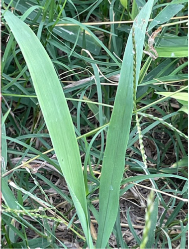
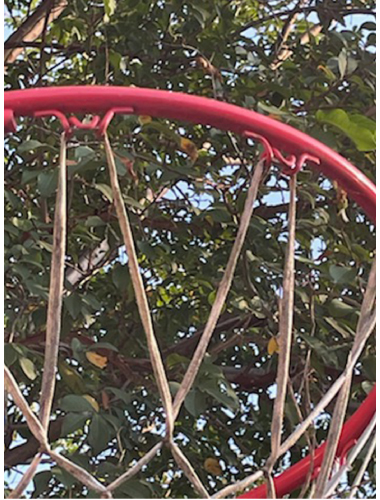

You can find letters naturally occurring just about anywhere. It's all just a matter of gaining a new prespective.
At your local park. These are just a couple of images to get you started but they can be found anywhere. A "V" made of two blades of grass and a "M" form on a basketball net. From trees, flowers and even park benches, you'll be suprised at how many letters are hiding in plain sight.
 There are different reasons why people should get into this. In my case, I'm currently taking a photography class and this was the assignment we had to do. I have younger siblings which I thought would have fun helping with my homework. I didn't limit them to just natural occuring letter though, as I didn't want to limit their imagination. We had a lot of fun, they were amazed with how many letters they found. I also think my photography skiils improved a bit as I learned how to adjust the aperture of a photo.
| letters | total found |
|---|---|
| S | 35 |
| V | 40 |
| N | 20 |
| M | 15 |
| W | 15 |
Whatever your reason is